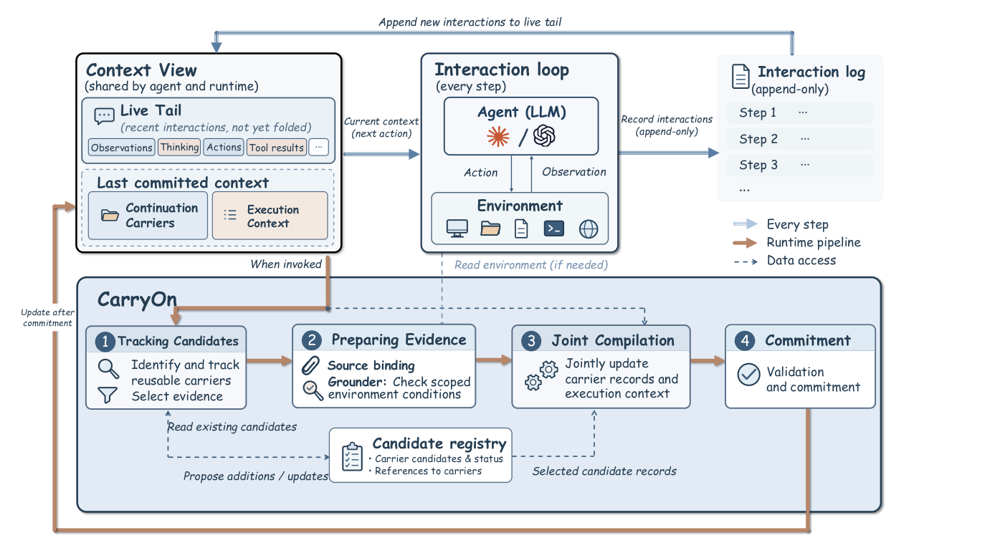

Under review, 2026
Pack Light, CarryOn: Building Object-Oriented Context for Long-Horizon Agents
Long-horizon agents that carry forward the task objects worth keeping, instead of a running log of everything they’ve done.
Hi! I’m Yuchen, currently working with Prof. Julian McAuley at UC San Diego on making AI agents efficient and reliable over long-horizon tasks. Before that, I studied spatial reasoning in vision-language models in Prof. Yilun Du’s lab at Harvard. I’ve also had research experience in industry on efficient LLM inference. I received my bachelor’s degree from Nanjing University and my master’s degree from the University of Michigan.
Currently looking for Fall 2027 PhD opportunities
I want to make agentic systems better at long, open-ended work. As agents of every kind (coding, multimodal, personal, embodied) run longer with less supervision, two abilities decide how far they can go:
Execution. Doing the task well, at a cost worth handing off: keeping the right context, staying reliable over hundreds of steps, and keeping cost from climbing.
Judgment. Knowing what’s worth doing, what’s safe, and what the person actually wants: choosing which approach to try and when to drop it; pursuing the real goal instead of gaming the check; reading the person’s intent, taste, and style; and staying steerable through a day-long run.
As raw capability evens out, I think judgment is what will set agents apart.

Under review, 2026
Long-horizon agents that carry forward the task objects worth keeping, instead of a running log of everything they’ve done.
University of MichiganAug 2024 – Jan 2026
Master’s, Electrical and Computer Engineering
Nanjing UniversitySep 2020 – Jul 2024
Bachelor’s, Electronic Science and Engineering
UC San DiegoJun 2026 – Present
Context management for long-horizon agents
with Prof. Julian McAuley
Harvard UniversityFeb 2026 – Apr 2026
Spatial reasoning in vision-language models
with Prof. Yilun Du
A browser studio that turns a photograph into an animated ASCII portrait. An in-browser segmentation model lifts the subject off the background, a brightness-driven WebGL field keeps the characters drifting, and WebCodecs exports a seamlessly looping video. Nothing leaves the device.
A few photographs I’ve taken. More on Instagram.
The Dark Side of the Moon
Wish You Were Here
The Joshua Tree
Random Access Memories
Blonde
More Life
DAMN.
小霞 2.0